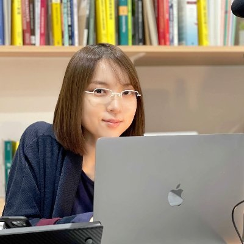
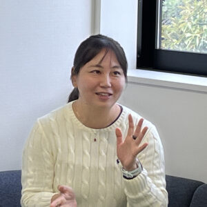
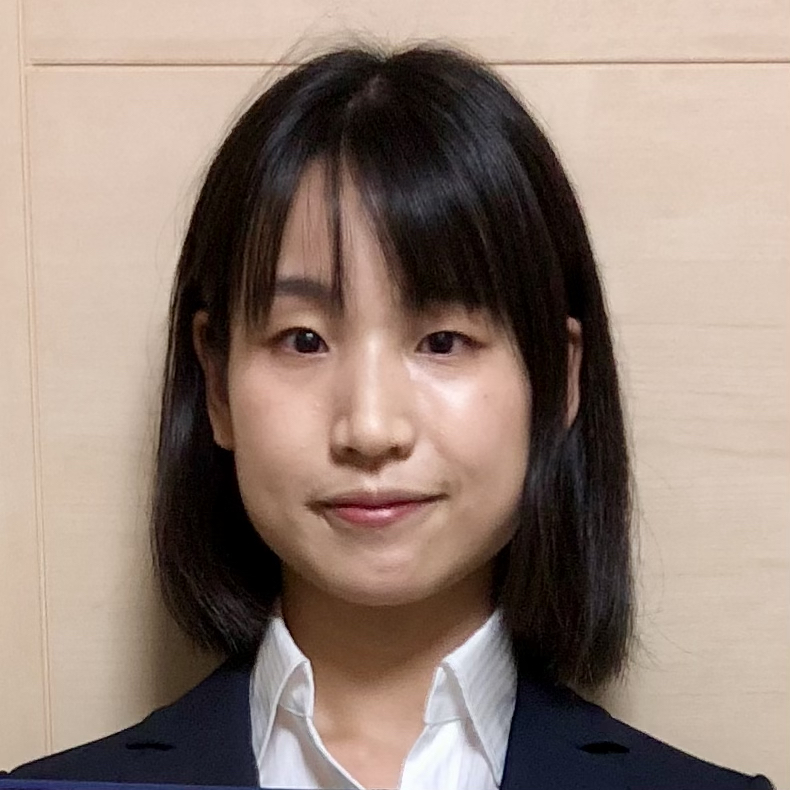

「JSTさきがけ」という制度をご存知でしょうか。
科学技術振興機構 (JST) が推進する、戦略的創造研究推進事業と呼ばれる取り組みのひとつで、主に若手の研究者を対象とした競争的研究資金です。
同じ競争的研究資金でも、科研費とは趣旨や仕組みが大きく異なります。
まず戦略目標と呼ばれる、社会課題に関連した大きな目標が設定され、その目標を達成するための「領域」とその総括が設定されます。
そして、総括が選んだ若手研究者が、目標の達成に向けて研究を推進するという構造になっています。
さきがけ研究者は、それぞれ自分の研究テーマに取り組みますが、半年に一回、領域のメンバーが勢揃いして進捗について議論する「領域会議」という場があるなど、研究者がチームを組んで目標に取り組むという側面もあります。
数学や数理科学を中心とした領域もこれまで4つ立ち上がり、女性研究者も多く活躍してきました。
「数理女子」の読者の皆さんに、この制度を知っていただきたいと思い、数理系のさきがけ研究に参加された以下の三人の女性研究者に、さきがけの思い出とこれからについて語っていただきました。
鼎談メンバーのプロフィール

早水桃子さん

小串典子さん

横井優さん
司会として、さきがけ「未来数理科学」領域総括の荒井迅（東京科学大学）も参加しました。
さきがけは楽しかった？
荒井
まずは皆さんのご経験から率直なご意見を伺いたいのですが、「さきがけ」は楽しかったですか。
早水
私は博士3年のときに1回目が採択され、最終年度に重なる形で2回目にも採択されました。合計6年半、楽しくやらせてもらいました。いちばん印象が強いのは、やはり最初の学生のときの「さきがけ」で、研究者人生のターニングポイントでした。当時は研究所所属の大学院生で、大学のように同世代の仲間が周りにいる環境ではありませんでした。採択されたことで、分野を超えたつながりができ、「自分のやっていることは数学として通用するのだ」と確信できたのが大きかったです。研究費の規模も、大学院生が普通に扱える額とは桁が違うので、挑戦できる幅が一気に広がりました。お金があるだけで成果が出るわけではありませんが、「資金があるから試せること」「作れるもの」が増えるのは確かです。もちろん長くやっていると、しばらく一人で静かに落ち着いて研究したいと思うこともあります。とはいえ、総じて「さきがけ」に育ててもらった感覚が強く、良い経験の方が圧倒的に多かったです。
小串
私は坂上さんが総括の領域の3期、最後のタイミングで採択されました。領域の中では、私のバックグラウンドやモチベーションは少し毛色が違ったと思います。その分、普段の学会では出会わない人たちと、同じ場で議論できたのが大きな刺激でした。学会だとどうしても近い分野の人とだけ会いがちですが、「さきがけ」は違う興味・動機を持つ人たちと同じ土俵で話せます。そこが一番の良さでした。それから「さきがけ」をやっていると外からの見え方が変わります。これまで接点のなかったところからセミナーの依頼が来るなど、視認性が上がって世界が広がった感覚がありました。採択後に職を得られたのも、何らかプラスに働いたのだと思います。
横井
私は楽しかったし、やって良かったと思っています。ただ、正直に言うと結構疲れました。3年半を無事にやり切って、いまはほっとしています。「もう一回やりたい？」と聞かれると、少し迷う、というのが本音です。私の研究はもともと「お金を使うタイプ」ではないので、採択された直後は「どう使おう」と考えたくらいでした。でもちょうど海外出張が多い時期で、結果的に旅費として使うことが多かったです。資金面を気にせず予定を組めるのは大きくて、今は逆に出張のたびに「まずお金が確保できるか」を心配しながら動いているので、当時は本当にストレスが少なかった。私も採択期間中に職を得たので、キャリア面でも良い影響はあったと思います。
荒井
三者三様だけれど、共通して「人とのつながり」「外からの見え方」「資金の自由度」が出てきましたね。
さきがけであることのプレッシャー
荒井
半年に1回、領域会議での進捗報告もあるし、落ち着いて勉強したい時期でも走り続けないといけない、という面はありますよね。
早水
領域会議やアドバイザーミーティング、アウトリーチなど、やることは多いです。優秀な人たちが集まっているし、研究費をいただいている以上、「何も進みませんでした」とか「全然違う研究をやっていました」とは言えない。
小串
理論研究だと、成果報告の仕方やスピードに、どう対処しようか迷うというか、ジレンマを感じることもありますよね。
早水
そうですね、そういう意味でのギルティーな感じは、みんな多少はあると思います。もちろん当初の計画から脇道にそれた内容でも面白い研究であれば挑戦を奨励してくれる領域がほとんどだと思いますが、進捗報告となると上手にプレゼンする必要がありますよね。みんながコンスタントに成果を出していて、レベルの高い発表をしているから、自分も頑張らなきゃという気持ちはありました。特に私は初めてさきがけに採択された時は大学院生だったので、「所詮学生だな」とがっかりさせたくない気持ちがあって、「採択して良かった」と思ってもらえる発表をしないと、というプレッシャーは強かったです。
荒井
成果報告だけ読むと、さきがけ研究者はみんな研究成果をバンバン出しているように感じてしまいますが、実際にはどの人も相当泥臭くもがいてますよね。そういう面が見えるのも領域会議の良いところかと思います。
横井
今回のような「さきがけの実態」の話も、応募を考えている人には役に立つ気がします。外から見ると、キラキラした人ばかりに見えてしまって、心理的ハードルが上がるので。
さきがけが与える印象
小串
私の印象では、「さきがけ」はもっと若手のイメージでしたが、最近は平均年齢が上がっていて、必ずしも若手だけの登竜門ではなくなっている気がします。私も40歳前後で応募しましたし、実際「ある程度キャリアを積んでから挑戦するもの」と言われたこともあります。一方で応募する側から見ると、領域のスコープが狭く思える見えることがあります。たとえば物理の理論系だと、そもそも応募しやすいテーマの領域が走っていない年が続いて、「今年は出せない」「数年出せない」が現実に起こります。そんな事情もあって、制度の位置づけが分野によってぶれて見えるのかもしれません。
早水
領域側は「幅広く歓迎」と思っていても、応募する側は「テーマや戦略目標にぴったりはまらないと出してはいけないのでは」と感じてしまう。私も坂上領域に応募する時は自分の研究が領域のスコープにマッチしているのか自信がなかったです。説明会に行って総括に直接質問したら、説明を読むだけではわからない部分もかなりありました。
荒井
総括をやってみて難しいと思ったのは、「何でもやって良いよ」と総括自身が思っていても、さきがけである以上、戦略目標との整合性も気にしなくてはいけないところです。だからこそ、研究者が「本当にやりたいこと」が書いてある申請書は読んで嬉しいし、魅力的に見える。小串さんも、2回申請していただいて、2回目で採用となりましたが、テーマを大きく変えましたよね。
小串
はい。私の専門は統計物理なのですが、統計物理は研究対象が非常に幅広いのが特徴の一つです。私に限らずですが、既存の領域に自分の研究課題がぴったり当てはまることはまずない、ともいえます。1回目に応募したときは、領域の話題をかなり意識した気がします。その結果落ちたので、2回目は領域の大きな趣旨だけ意識して、あとはダメなら弾かれるだけだと思って「やりたいこと」を軸に自由に応募書類を書きました。結果として、やりたいことが素直に出た方が伝わったと思います。
早水
学生のときに「さきがけに採択されました」と言うと、「学生で採択はすごいね」と言われる一方で、学会などで「それは何？」と言われることもありました。科研費が中心の環境だと、JSTの制度があまり知られていないこともあります。大学としても、どんどん応募しましょうと奨励しているところもあれば、そうではないところもある。結果として、制度にアクセスしやすいコミュニティが形成されてしまい、「内輪で採択が決まっているのでは」と誤解されることも起きます。
横井
応募の母数を増やすには、制度の情報が"届く"ことが大事ですよね。周りに経験者がいないと、そもそも「自分が出していいのか」が分からないし、書類の書き方も含めて心理的な壁が高い。
早水
私もそう思います。知らない大学・分野にも届く形にして、"村"を内輪にしないことが重要ですね。
さきがけ研究費は何に使った？
荒井
少し具体的に、研究費は何に使いましたか。
横井
私はほぼ旅費です。海外のワークショップに招待される機会が多い時期だったので、旅費の心配をしなくて良かったのは助かりました。
小串
私は計算機と旅費ですね。海外訪問も「行く」と決めたら、資金面を気にせず動ける。その機動力は、ありがたかったです。
早水
私はソフトウェアの外注に大きく使いました。今は生成AIの時代で状況が変わりつつありますが、当時は、高品質なソフトウェアを作り込むには思った以上に費用がかかると知って、「これをやるなら、こういう研究費が必要だ」と思ったのが応募の動機でもあります。それと、研究補助者の人件費です。採用や教育など苦労もありましたが、そこで鍛えられた面もあります。
横井
思い出しました。私も前職では研究補助者を雇い、こちらに移ってからは学生をRAで雇うのに使いました。プログラムを書いてもらえたし、学生側もアルバイトと勉学が両立できて、ウィンウィンでした。
小串
私も研究補助者を雇いたかったのですが、時期的な事情もあって見つからず、人件費にはあまり使えませんでした。
荒井
早水さんはYouTubeなどでアウトリーチもされていましたよね。機材などは。
早水
コロナ禍以降に始めたので、カメラなどを買ったことはあります。ただ、研究費の規模からすると大きい支出ではなく、せいぜい数十万円程度です。私の場合は、やはりソフトウェア外注と人件費が中心でした。
横井
私たちの分野だと、「お金が切実に必要だから応募する」という動機は必ずしも強くないと思います。実験系だと研究費の必要性が分かりやすいですが、理論・情報系だと、メリットが「旅費の自由度」や「見え方（ステータス）」に寄りやすい。そういう“見え方のメリット”は、価値がある一方で、前に出しにくい。結果として「何のために応募するのか」が伝わりにくく、応募の心理的ハードルが上がるのかもしれません。
小串
自由度の高い研究環境と研究費が数年間確保できる、というのが私には一番大きな応募動機でした。それと別に、みなさんそうだと思うのですが、採択後にそれまであまり交流のなかった場所からもセミナーなどに呼んでいただけて、外部からの視認性が上がったことを感じました。応募時にはそこまで想像していなかったのですが、これも大きな「さきがけ」の影響だと思います。
早水
応募の心理的ハードルを下げるには、リアルなメリットを具体的に示すのが効くと思います。資金面だけでなく、「仲間ができる」「視野が広がる」「アドバイスがもらえる」「職を得るのに役立つ」という利点も、若手のためにもっと知られて欲しい。
さきがけ研究者の女性比率
荒井
日本の研究者の女性比率についてはどう思いますか。
小串
分野による差は大きいと思います。物理の理論系だと、30代以降の女性研究者は数％という感覚です。さきがけでは応募者が100人程度に女性が数人で少ないのでは？というのがJSTの意見とのことですが、自然な結果だと思います。むしろ、私が採択された領域で女性が3人もいたのは印象的でした。周りに女性がほとんどいない環境でやってきたので、素直に嬉しかったです。現在は私が学生の頃とは状況が変わってきていて、大学入試の時点では数物系・工学系でも女子学生の比率が３割程度まで伸びています。
横井
私の周りだと、下の世代の女性がなかなか育っていない、という感覚があります。学部には一定数いても、博士に進む人が少ない。博士に進む選択を、どう後押しするかが大きいと思います。
小串
博士課程の進学率の低さは、男女を問わず課題になっていますね。女性の場合は「安定」を求めて資格職に流れやすい、という説明をされることもありますが、私はそれに加えて「そこで働く姿がイメージしづらい」ことも大きいと思います。研究者としても人としても、「良い」生活や将来像が具体的に描けないと、選択肢から外れやすい。友達もできなさそうなところは、敬遠しますよね。
早水
私は横井さんとは違う印象です。地域や大学のタイプでも状況は違うと思いますが、私が今いる都心の私立大学だと、数理や情報に進む女子学生は多いし、数学系の博士に進学する学生も男女問わず増えている実感があります。それに比べると、私が大学生の頃は研究者になりたい人が男女問わず少なかったと感じます。当時は日本の成績上位層が医学部に集中し、医学部でも博士号より専門医資格だという考えが広まりました。だから数理や情報に限らず、私の世代はそもそも研究者人材の層が薄い気がします。数年経てばいまの若い世代が活躍し始めるので、さきがけに応募する女性研究者も今より増えると見込んでいます。
荒井
私と横井さんは（旧）東工大のように、もともと女性が少ない環境にいるので、見えている景色が偏っている可能性もあります。オープンキャンパスでは高校生女子が多く来ても、入学段階で減ってしまう。施設面、例えば女子トイレの少なさとか、大学側の課題もありますね。
小串
女子学生は、2〜3割いると十分存在感があります。さきほどもいいましたが、現在は理系学部での女子学生比率が学部では３割程度あります。自分が「マイノリティだ」とは感じにくくなっているのではないかと思います。
横井
こういう議論をしていていつも思うのは、いまここにいるのは「女性が少ない環境でも平気でやってきた人」だということです。女子を増やすには、むしろ途中で別の道に行った人に「何が違えば博士に残ったか」を聞いた方が本質に近いのでは、と思います。
早水
分野や場面によって、ジェンダーバイアスのようなものを感じることはあります。例えば、若い頃にポスター発表で質問しても、「これは数学だから」と、十分に説明してもらえないような経験をしたことがあります。悪気はなくても、無意識のコミュニケーションで軽く扱われる、ということは起こり得ます。ただ、キャリアが決定的に阻まれるというよりは、日常のやり取りで「ん？」と思うことがある、という感覚です。今はむしろ、同年代の男性教員と自分に向けられる視線が違う、と感じる場面もあります。一方で、最近は「女性であることが追い風になる」局面もあります。制度や大学側が女性研究者を増やしたいという意思を持つのは、少なくとも昔よりは明確なので、そこはポジティブだと思っています。
小串
私の分野（統計物理）では、研究面でジェンダーバイアスを感じることは全くありませんでした。生活する上ではタフな面もありますが、それでも、若い時に圧倒的なマイノリティを経験したことは、私には結果としてポジティブでした。研究ではフラットに扱われるというのが根底にあったので、割と気楽にここまできちゃった、というのが本音です。むしろ教員になってから、男女ともにジェンダーが問題となって困っている場面に遭遇することが増えたように思います。
さきがけ研究者から、数理系の女性研究者・大学院生へのメッセージ
荒井
私の大学でも、女性活躍に関係するイベントが増えていますが、そのたび女性研究者に協力をお願いしてしまいます。そういう仕事が増えること、率直に、負担に感じませんか。
横井
私は今は女性比率を増やそうとしている過渡期なので、一定の役割は引き受けるべきだと思っています。ただ、率直に言えば「依頼が来ない状況になるのが一番うれしい」です。
小串
現状では人数が足りていないですよね。バイアスがあるのも事実なので対策自体は必要ですし、粛々と進めるべきだと思います。女性だけでなく、こうしたイベントには一緒に研究・仕事をする男性の話も必要だと思います。ただ、こうした役割が出来る人は限られるので、実は男女ともに絶対的に人が足りないのでは、と思います。
早水
医学系から転向してきた私が強く思うのは、医学系と比べて数学系には女性教員や女性研究者がたくさんいて活躍しているということです。それでも女性をもっと増やしたいのかもしれないけれど、他分野と比べれば女性がたくさん活躍しているのは事実なのだから、「女性が少ない、少ない」と強調しないで欲しい。「数学系は女性が少ないらしい」「女性が行くと苦労しそう」という間違ったイメージを持たれかねません。むしろ「女性も普通にいて、ロールモデルもいて、楽しく研究してリスペクトされている」というポジティブな現状を前面に出してもらいたい。女性を採りたいという必死さが見えると、「女性だから採られたのでは」と感じさせてしまうこともあるので、採用や採択の場面でも逆効果になり得ます。女性の応募を増やしたいなら、女性を歓迎しますと言うよりも、男女問わずさきがけ研究者になるメリットをアピールし、初めて応募する人の心理的ハードルを下げる工夫をする方が効くと思います。
横井
必死感を出されると、次に女性が採択されても、素直に喜びにくくなる、というのは分かります。本人としても「自分はダイバーシティ要員だったのかな」と感じてしまうと、前向きに受け止めにくい。
小串
私自身は女性が少なくてもあまり気にしてこなかったのですが、人数が多い方がいいと思う人にとっては、ネガティブなメッセージになってしまいますね。「普通に生活して研究できている」という実態は伝えられるといいですね。今の学部生や高校生と関わると、いわゆる理系の学生であっても男女ともに社交的だなと思うことが多くあります。私が学生だった頃の「理系」とは大分様子が変わってきていると感じるのですが、もしかすると今が過渡期で、その下の世代はもう少し身軽かもしれない、と思うこともあります。
荒井
今日は話がいろいろ広がり、とても勉強になりました。ありがとうございました。